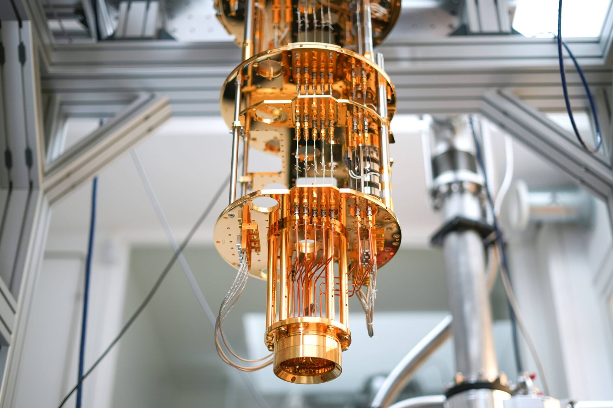

Présentation
L'informatique quantique exploite les propriétés de la mécanique quantique (superposition, intrication) pour traiter l'information autrement : au lieu de bits valant 0 ou 1, elle manipule des qubits capables de représenter plusieurs états à la fois — ce qui ouvre la voie à une puissance de calcul inédite, mais fragile et porteuse de nouveaux risques pour la sécurité.
Cette page de veille suit le sujet selon trois axes : l'architecture matérielle et la correction d'erreurs, le risque cryptographique et la migration post-quantique, puis les cas d'usage sectoriels et la souveraineté. Le contenu de ces axes est mis à jour en continu ; cette présentation, elle, reste fixe.

Chargement des axes de veille…
Sources utilisées pour cette veille
Chargement des sources…